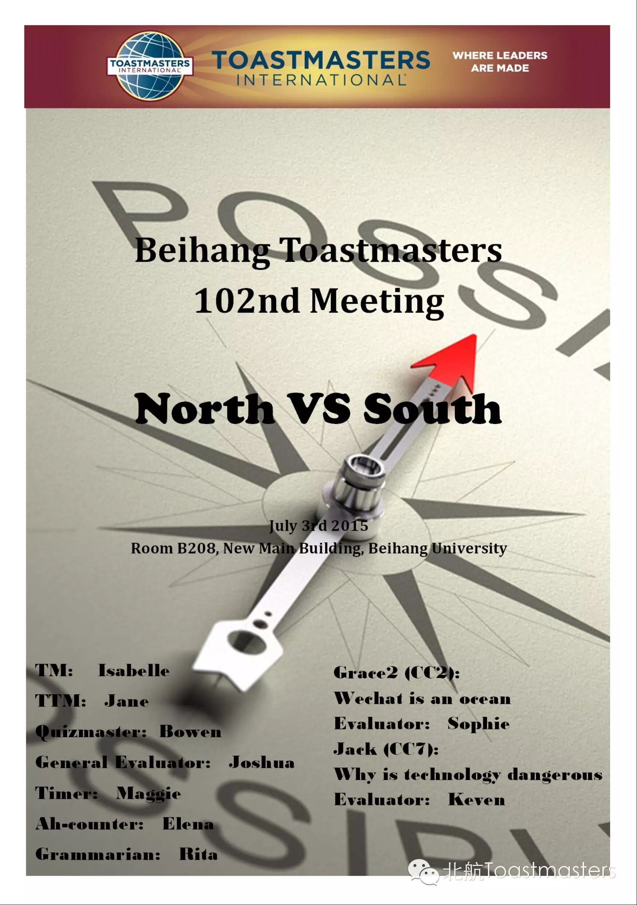
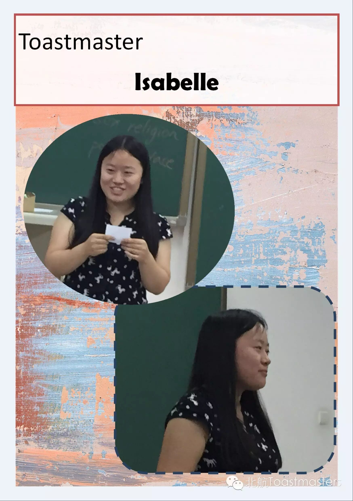
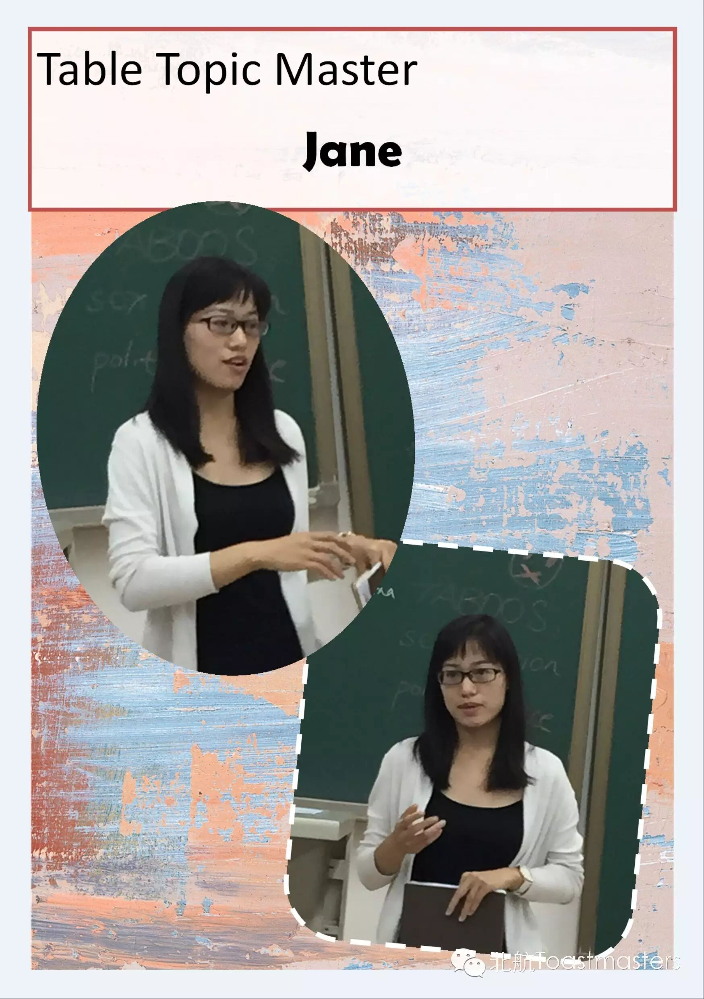
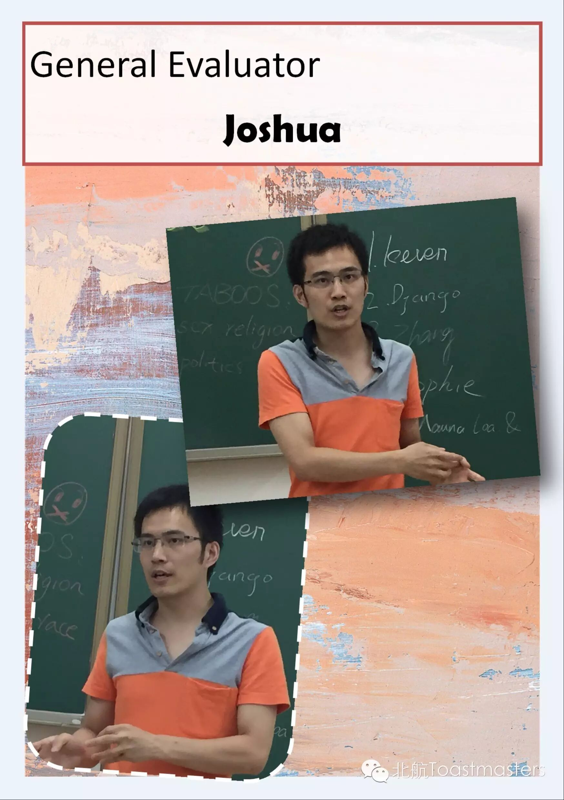
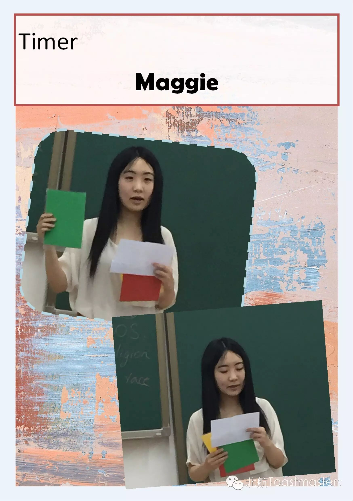
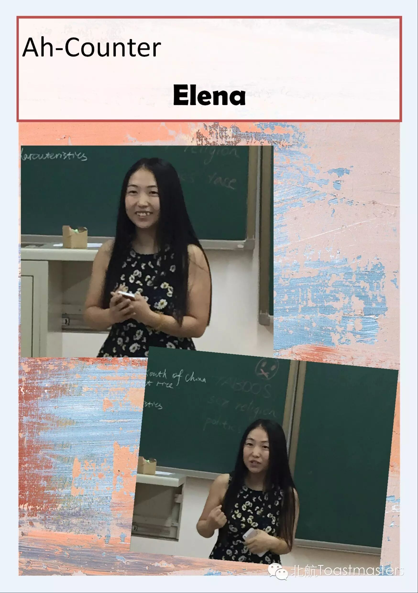
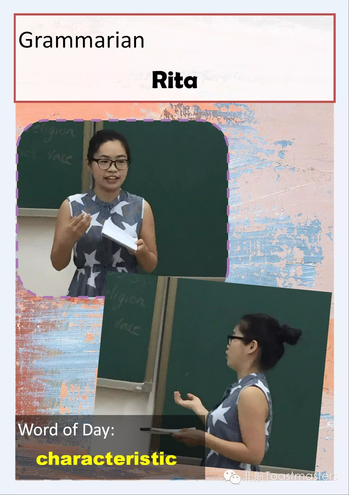
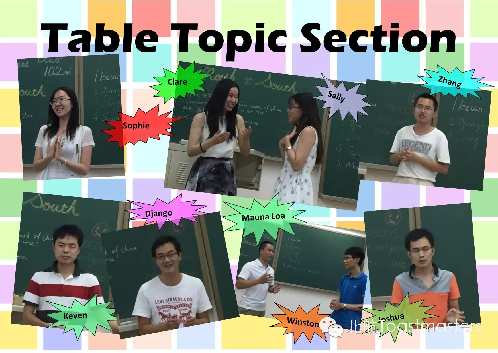
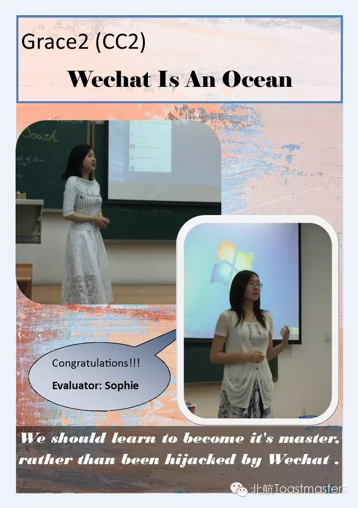
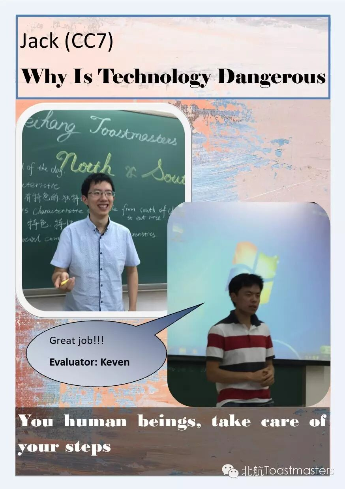
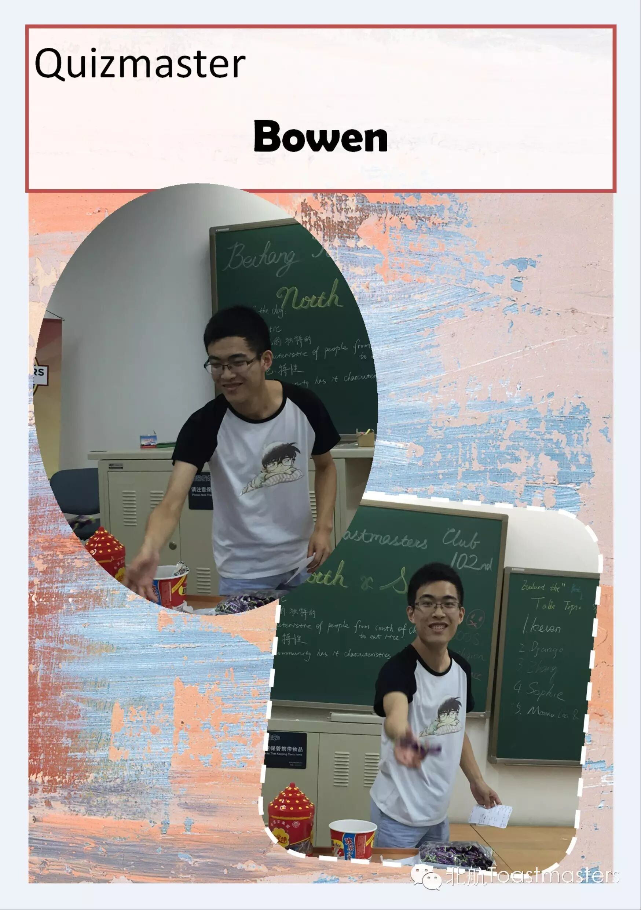
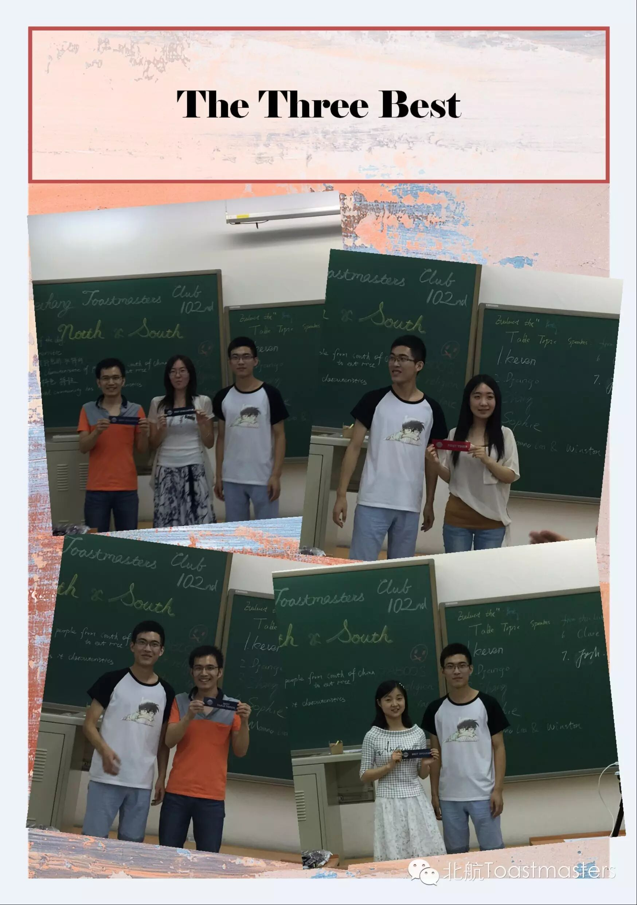
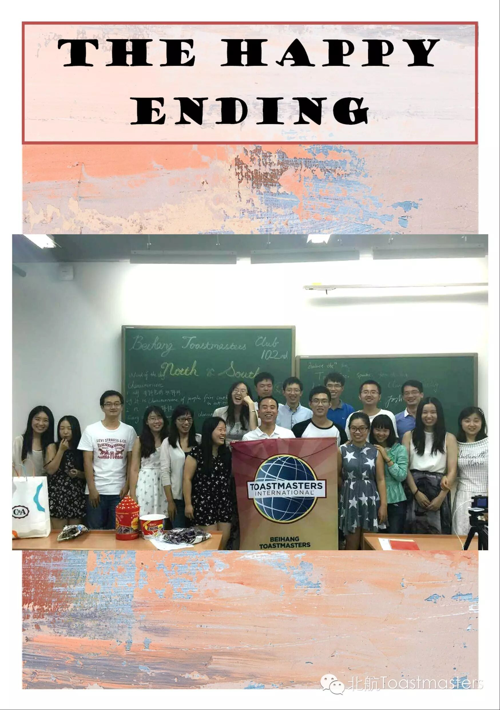
Critical thinking about the comparison and contrast between the culture of North and South inspired us a lot. Some our great guests delivered really wonderful table topic! Wish next meeting time!